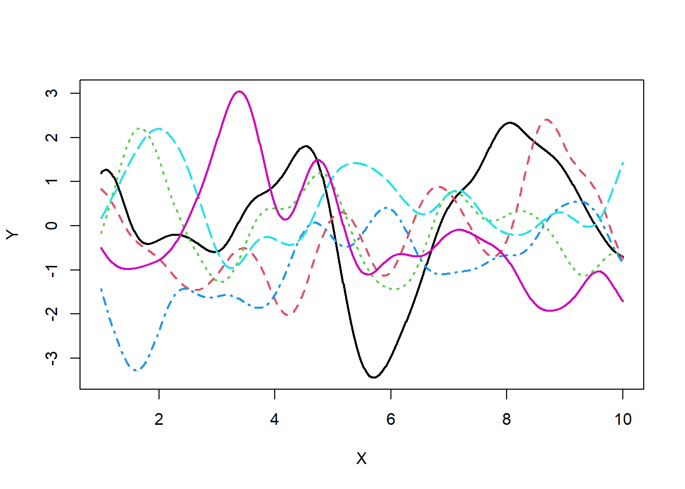
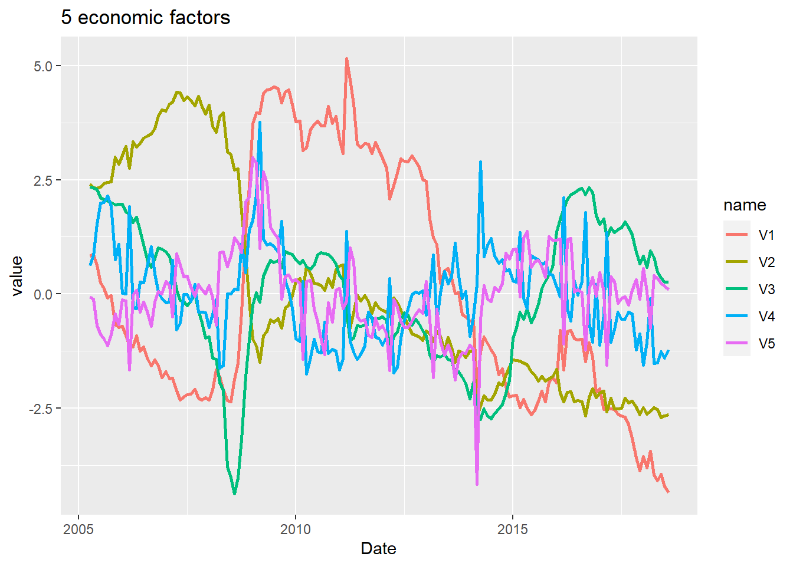
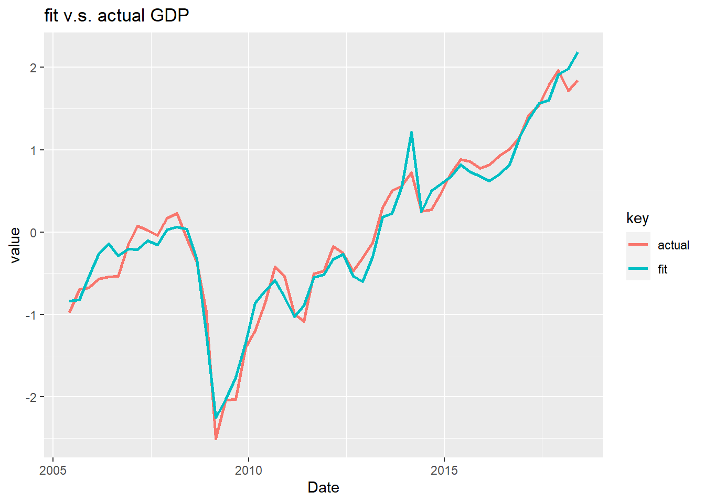
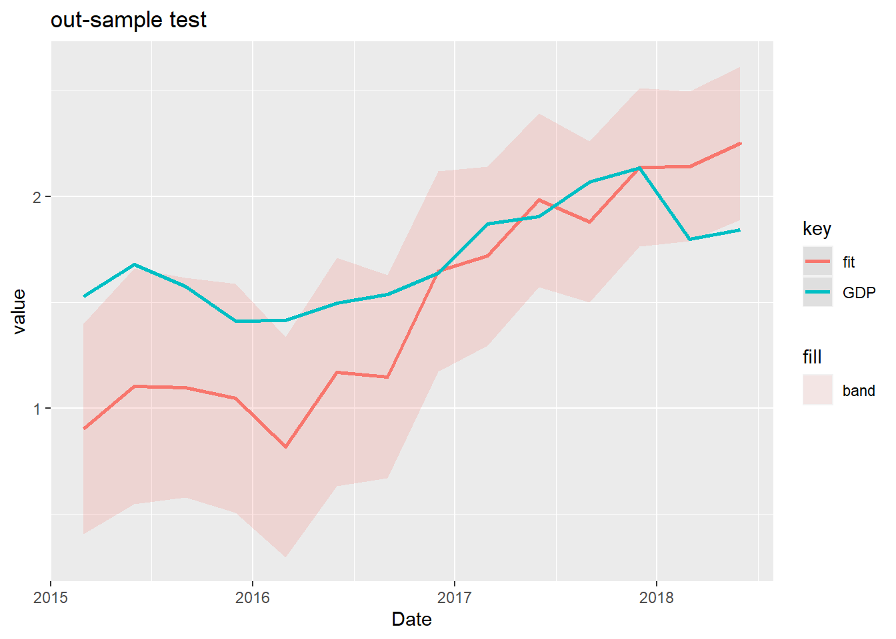

GPLVMでマルチファクターモデルを構築してみた
おはこんばんにちは。
ずいぶん前にGianonne et al (2008)のマルチファクターモデルで四半期GDPの予想を行いました。
結果としては、ある程度は予測精度が出ていたものの彼らの論文ほどは満足のいくものではありませんでした。原因としてはクロスセクショナルなデータ不足が大きいと思われ、現在収集方法についてもEXCELを用いて改修中です。しかし一方で、マルチファクターモデルの改善も考えたいと思っています。前回は月次経済統計を主成分分析（実際にはカルマンフィルタ）を用いて次元削減を行い、主成分得点を説明変数としてGDPに回帰しました。今回はこの主成分分析のド発展版であるGaussian Process Latent Variable Model(GPLVM)を用いてファクターを計算し、それをGDPに回帰したいと思います。
1. GPLVMとは
GPLVMとは、Gaussian Process Modelの一種です。以前、Gaussian Process Regressionの記事を書きました。
最も基本的なGaussian Process Modelは上の記事のようなモデルで、非説明変数\(Y=(y_{1},y_{2},...,y_{n})\)と説明変数\(X=(\textbf{x}_{1},\textbf{x}_{2},...,\textbf{x}_{n})\)があり、以下のような関係式で表される際にそのモデルを直接推定することなしに新たな説明変数\(X\)の入力に対し、非説明変数\(Y\)の予測値をはじき出すというものでした。
\[ \displaystyle y_{i} = \textbf{w}^{T}\phi(\textbf{x}_{i}) \]
ここで、\(\textbf{x}_{i}\)は\(i\)番目の説明変数ベクトル、\(\phi(・)\)は非線形関数、 \(\textbf{w}^{T}\)は各入力データに対する重み係数（回帰係数）ベクトルです。非線形関数としては、\(\phi(\textbf{x}_{i}) = (x_{1,i}, x_{1,i}^{2},...,x_{1,i}x_{2,i},...)\)を想定しています（\(x_{1,i}\)は\(i\)番目の入力データ\(\textbf{x}_{i}\)の１番目の変数）。詳しくは過去記事を参照してください。
今回やるGPLVMは説明変数ベクトルが観測できない潜在変数（Latent Variable）であるところが特徴です。以下のスライドが非常にわかりやすいですが、GP-LVMは確率的主成分分析（PPCA）の非線形版という位置付けになっています。
では具体的な説明に移ります。GPLVMは主成分分析の発展版ですので、主に次元削減のために行われることを想定しています。つまり、データセットがあったとして、サンプルサイズ\(n\)よりも変数の次元\(p\)が大きいような場合を想定しています。
2. 最もPrimitiveなGP-LVM
先述したようにGPLVMはPPCAの非線形版です。なので、GPLVMを説明するスタートはPPCAになります。観測可能な\(D\)次元データセットを\(\{\textbf{y}_{n}\}_{n=1}^{N}\)とします。そして、潜在変数を\(\textbf{x}_{n}\)とおきます。今、データセットと潜在変数の間には以下のような関係があるとします。
\[ \textbf{y}_{n} = \textbf{W}\textbf{x}_{n} + \epsilon_{n} \]
ここで、\(\textbf{W}\)はウェイト行列、\(\epsilon_{n}\)はかく乱項で\(N(0,\beta^{-1}\textbf{I})\)に従います（被説明変数が多次元になることに注意）。また、\(\textbf{x}_{n}\)は\(N(0,\textbf{I})\)に従います。このとき、\(\textbf{y}_{n}\)の尤度を\(\textbf{x}_{n}\)を周辺化することで表現すると、
\[ \begin{eqnarray*} \displaystyle p(\textbf{y}_{n}|\textbf{W},\beta) &=& \int p(\textbf{y}_{n}|\textbf{x}_{n},\textbf{W},\beta)N(0,\textbf{I})d\textbf{x}_{n} \\ \displaystyle &=& \int N(\textbf{W}\textbf{x}_{n},\beta^{-1}\textbf{I})N(0,\textbf{I})d\textbf{x}_{n} \\ &=& N(0,\textbf{W}\textbf{W}^{T} + \beta^{-1}\textbf{I}) \\ \displaystyle &=& \frac{1}{(2\pi)^{DN/2}|\textbf{W}\textbf{W}^{T} + \beta^{-1}\textbf{I}|^{N/2}}\exp(\frac{1}{2}\textbf{tr}( (\textbf{W}\textbf{W}^{T} + \beta^{-1}\textbf{I})^{-1}\textbf{YY}^{T})) \end{eqnarray*} \]
となります。ここで、\(p(\textbf{y}_{n}|\textbf{x}_{n},\textbf{W},\beta)=N(\textbf{W}\textbf{x}_{n},\beta^{-1}\textbf{I})\)です。平均と分散は以下から求めました。
\[ \begin{eqnarray*} E(\textbf{y}_{n}|\textbf{W},\beta) &=& E(\textbf{W}\textbf{x}_{n} + \epsilon_{n}) \\ &=& E(\textbf{W}\textbf{x}_{n}) + E(\epsilon_{n}) \\ &=& \textbf{W}E(\textbf{x}_{n}) + E(\epsilon_{n}) = 0 \end{eqnarray*} \]
\[ \begin{eqnarray*} E[(\textbf{y}_{n}|\textbf{W},\beta)(\textbf{y}_{n}|\textbf{W},\beta)^{T}] &=& E[ (\textbf{W}\textbf{x}_{n} + \epsilon_{n} - 0)(\textbf{W}\textbf{x}_{n} + \epsilon_{n} - 0)^{T} ] \\ &=& E[ (\textbf{W}\textbf{x}_{n} + \epsilon_{n})(\textbf{W}\textbf{x}_{n} + \epsilon_{n})^{T} ] \\ &=& E[ \textbf{W}\textbf{x}_{n}(\textbf{W}\textbf{x}_{n})^{T} + \textbf{W}\textbf{x}_{n}\epsilon_{n}^{T} + \epsilon_{n}\textbf{W}\textbf{x}_{n}^{T} + \epsilon_{n}\epsilon_{n}^{T} ] \\ &=& E[ \textbf{W}\textbf{x}_{n}(\textbf{W}\textbf{x}_{n})^{T} + \epsilon_{n}\epsilon_{n}^{T} ] \\ &=& E[ \textbf{W}\textbf{x}_{n}\textbf{x}_{n}^{T}\textbf{W}^{T} + \epsilon_{n}\epsilon_{n}^{T} ] \\ &=& E[ \textbf{W}\textbf{x}_{n}\textbf{x}_{n}^{T}\textbf{W}^{T}] + E[\epsilon_{n}\epsilon_{n}^{T} ] \\ &=& \textbf{W}\textbf{W}^{T} + \beta^{-1}\textbf{I} \end{eqnarray*} \]
\(\textbf{W}\)を求めるためには\(\textbf{y}_{n}\)がi.i.d.と仮定し、以下のようなデータセット全体の尤度を最大化すれば良いことになります。
\[ \displaystyle p(\textbf{Y}|\textbf{W},\beta) = \prod_{n=1}^{N}p(\textbf{y}_{n}|\textbf{W},\beta) \]
ここで、\(\textbf{Y}\)は\(N×D\)の計画行列です。このように、PPCAでは\(\textbf{x}_{n}\)を周辺化し、\(\textbf{W}\)を最適化します。逆に、Lawrence(2004)では\(\textbf{W}\)を周辺化し、\(\textbf{x}_{n}\)します（理由は後述）。\(\textbf{W}\)を周辺化するために、\(\textbf{W}\)に事前分布を与えましょう。
\[ \displaystyle p(\textbf{W}) = \prod_{i=1}^{D}N(\textbf{w}_{i}|0,\alpha^{-1}\textbf{I}) \]
ここで、\(\textbf{w}_{i}\)はウェイト行列\(\textbf{W}\)の\(i\)番目の列です。では、\(\textbf{W}\)を周辺化して\(\textbf{Y}\)の尤度関数を導出してみます。やり方はさっきとほぼ同じなので省略します。
\[ \displaystyle p(\textbf{Y}|\textbf{X},\beta) = \frac{1}{(2\pi)^{DN/2}|K|^{D/2}}\exp(\frac{1}{2}\textbf{tr}(\textbf{K}^{-1}\textbf{YY}^{T})) \]
ここで、\(\textbf{K}=\alpha^2\textbf{X}\textbf{X}^{T} + \beta^{-1}\textbf{I}\)は\(p(\textbf{Y}|\textbf{X},\beta)\)の分散共分散行列で、\(\textbf{X}=(\textbf{x}_{1},\textbf{x}_{2},...,\textbf{x}_{N})^{T}\)は入力ベクトルです。対数尤度は
\[ \displaystyle L = - \frac{DN}{2}\ln{2\pi} - \frac{1}{2}\ln{|\textbf{K}|} - \frac{1}{2}\textbf{tr}(\textbf{K}^{-1}\textbf{YY}^{T}) \]
周辺化のおかげでウェイト\(\textbf{W}\)が消えたのでこれを\(X\)で微分してみましょう。
\[ \displaystyle\frac{\partial L}{ \partial \textbf{X}} = \alpha^2 \textbf{K}^{-1}\textbf{Y}\textbf{Y}^{T}\textbf{K}^{-1}\textbf{X} - \alpha^2 D\textbf{K}^{-1}\textbf{X} \]
ここから、
\[ \displaystyle \frac{1}{D}\textbf{Y}\textbf{Y}^{T}\textbf{K}^{-1}\textbf{X} = \textbf{X} \]
ここで、特異値分解を用いると
\[ \textbf{X} = \textbf{ULV}^{T} \]
となります。\(\textbf{U} = (\textbf{u}_{1},\textbf{u}_{2},...,\textbf{u}_{q})\)は\(N×q\)直交行列、\(\textbf{L} = diag(l_{1},l_{2},..., l_{q})\)は\(q×q\)の特異値を対角成分に並べた行列、\(\textbf{V}\)は\(q×q\)直交行列です。これを先ほどの式に代入すると、
\[ \begin{eqnarray*} \textbf{K}^{-1}\textbf{X} &=& (\alpha^2\textbf{X}\textbf{X}^{T} + \beta^{-1}\textbf{I})^{-1}\textbf{X} \\ &=& \textbf{X}(\alpha^2\textbf{X}^{T}\textbf{X} + \beta^{-1}\textbf{I})^{-1} \\ &=& \textbf{ULV}^{T}(\alpha^2\textbf{VLU}^{T}\textbf{ULV}^{T} + \beta^{-1}\textbf{I})^{-1} \\ &=& \textbf{ULV}^{T}\textbf{V}(\alpha^2\textbf{LU}^{T}\textbf{UL} + \beta^{-1}\textbf{I}^{-1})\textbf{V}^{T} \\ &=& \textbf{UL}(\alpha^2\textbf{L}^{2} + \beta^{-1}\textbf{I})^{-1}\textbf{V}^{T} \end{eqnarray*} \]
なので、
\[ \begin{eqnarray*} \displaystyle \frac{1}{D}\textbf{Y}\textbf{Y}^{T}\textbf{UL}(\alpha^2\textbf{L}^{2} + \beta^{-1}\textbf{I})^{-1})\textbf{V}^{T} &=& \textbf{ULV}^{T}\\ \displaystyle \textbf{Y}\textbf{Y}^{T}\textbf{UL} &=& D\textbf{U}(\alpha^2\textbf{L}^{2} + \beta^{-1}\textbf{I})^{-1}\textbf{L} \\ \end{eqnarray*} \]
となります。\(l_{j}\)が0でなければ、\(\textbf{Y}\textbf{Y}^{T}\textbf{u}_{j} = D(\alpha^2 l_{j}^{2} + \beta^{-1})\textbf{u}_{j}\)となり、\(\textbf{U}\)のそれぞれの列は\(\textbf{Y}\textbf{Y}^{T}\)の固有ベクトルであり、対応する固有値\(\lambda_{j}\)は\(D(\alpha^2 l_{j}^{2} + \beta^{-1})\)となります。つまり、未知であった\(X=ULV\)が実は\(\textbf{Y}\textbf{Y}^{T}\)の固有値問題から求めることが出来るというわけです。\(l_{j}\)は上式を利用して、
\[ \displaystyle l_{j} = (\frac{\lambda_{j}}{D\alpha^2} - \frac{1}{\beta\alpha^2})^{1/2} \]
と\(\textbf{Y}\textbf{Y}^{T}\)の固有値\(\lambda_{j}\)とパラメータから求められることがわかります。よって、\(X=ULV\)は
\[ \textbf{X} = \textbf{U}_{q}\textbf{L}\textbf{V}^{T} \]
となります。ここで、\(\textbf{U}_{q}\)は\(\textbf{Y}\textbf{Y}^{T}\)の固有ベクトルを\(q\)個取り出したものです。\(\beta\)が限りなく大きければ（=観測誤差が限りなく小さければ）通常のPCAと一致します。
以上がPPCAです。GPLVMはPPCAで確率モデルとして想定していた以下のモデルを拡張します。
\[ \textbf{y}_{n} = \textbf{W}^{T}\textbf{x}_{n} + \epsilon_{n} \]
具体的には、通常のガウス過程と同様、
\[ \displaystyle \textbf{y}_{n} = \textbf{W}^{T}\phi(\textbf{x}_{n})+ \epsilon_{n} \]
という風に基底関数\(\phi(\textbf{x}_{n})\)をかませて拡張します。\(\phi(・)\)は平均\(\textbf{0}\)、分散共分散行列\(\textbf{K}_{\textbf{x}}\)のガウス過程と仮定します。分散共分散行列\(\textbf{K}_{\textbf{x}}\)は
\[ \textbf{K}_{\textbf{x}} = \alpha^2\phi(\textbf{x})\phi(\textbf{x})^T \]
であり、入力ベクトル\(\textbf{X}\)を\(\phi(\textbf{・})\)で非線形変換した特徴量\(\phi(\textbf{x})\)が近いほど、出力値\(\textbf{Y}\)も近くなりやすいという性質があることになります。GPLVMではこの性質を逆に利用しています。つまり、出力値\(Y_i\)と\(Y_j\)が近い→\(\phi(\textbf{x}_i)\)と\(\phi(\textbf{x}_j)\)が近い（内積が大きい）→\(\textbf{K}_{x,ij}\)が大きい→観測不可能なデータ\(X_{i}\)と\(X_{j}\)は近い値（or同じようなパターン）をとる。 この議論からもわかるように、\(\textbf{K}_{\textbf{x}}\)は入力ベクトル\(\textbf{X}\)それぞれの距離を表したものになります。分散共分散行列の計算には入力ベクトル\(\textbf{X}\)を基底関数\(\phi(\textbf{・})\)で非線形変換した後、内積を求めるといったことをする必要はなく、カーネル関数を計算するのみでOKです。今回は王道中の王道RBFカーネルを使用していますので、これを例説明します。
RBFカーネル（スカラーに対する） \[ \theta_{1}\exp(-\frac{1}{\theta_{2}}(x-x^T)^2) \]
このRBFカーネルは以下の基底関数と対応しています。
\[ \phi(x)_h = \tau\exp(-\frac{1}{r}(x-h)^2) \]
例えば、この基底関数で入力\(x\)を変換したものを\(2H^2+1\)個並べた関数を
\[ \phi(x) = (\phi(x)_{-H^2}, ..., \phi(x)_{0},...,\phi(x)_{H^2}) \]
入力\(x\)の特徴量だとすると\(x'\)との共分散\(K_{x}(x,x')\)は内積の和なので
\[ K_{x}(x,x') = \sum_{h=-H^2}^{H^2}\phi_{h}(x)\phi_{h}(x') \]
となります。ここで、\(H \to \infty\)とし、グリッドを極限まで細かくしてみます。
\[ \begin{eqnarray*} K_{x}(x,x') &=& \lim_{H \to \infty}\sum_{h=-H^2}^{H^2}\phi_{h}(x)\phi_{h}(x') \\ &\to&\int_{-\infty}^{\infty}\tau\exp(-\frac{1}{r}(x-h)^2)\tau\exp(-\frac{1}{r}(x'-h)^2)dh \\ &=& \tau^2 \int_{-\infty}^{\infty}\exp(-\frac{1}{r}\{(x-h)^2+(x'-h)^2\})dh \\ &=& \tau^2 \int_{-\infty}^{\infty}\exp(-\frac{1}{r}\{2(h-\frac{x+x'}{2})^2+\frac{1}{2}(x-x')^2\})dh \\ \end{eqnarray*} \]
となります。\(h\)に関係のない部分を積分の外に出します。
\[ \begin{eqnarray*} &=& \tau^2 \int_{-\infty}^{\infty}\exp(-\frac{2}{r}(h-\frac{x+x'}{2})^2)dh\exp(-\frac{1}{2r}(x-x')^2) \\ \end{eqnarray*} \]
残った積分を見ると、正規分布の正規化定数と等しいことがわかります。
\[ \begin{eqnarray*} \int_{-\infty}^{\infty}\exp(-\frac{1}{2\sigma}(h-\frac{x+x'}{2})^2)dh &=& \int_{-\infty}^{\infty}\exp(-\frac{2}{r}(h-\frac{x+x'}{2})^2)dh\\ \sigma &=& \frac{r}{4} \end{eqnarray*} \]
となるので、ガウス積分の公式を用いて
\[ \begin{eqnarray*} &=& \tau^2 \sqrt{\frac{\pi r}{2}}\exp(-\frac{1}{2r}(x-x')^2) \\ &=& \theta_{1}\exp(-\frac{1}{\theta_{2}}(x-x’)^2) \end{eqnarray*} \]
となり、RBFカーネルと等しくなることがわかります。よって、RBFカーネルで計算した共分散は上述した基底関数で入力\(x\)を無限次元へ拡張した特徴量ベクトルの内積から計算した共分散と同値になることがわかります。つまり、入力\(x\)と\(x'\)のスカラーの計算のみで\(K_{x}(x,x')\)ができてしまうという夢のような計算効率化が可能になるわけです。無限次元特徴量ベクトルの回帰問題なんて普通計算できませんからね。。。カーネル関数は偉大です。 前の記事にも載せましたが、RBFカーネルで分散共分散行列を計算したガウス過程のサンプルパスは以下通りです（\(\theta_1=1,\theta_2=0.5\)）。
# Define Kernel function
Kernel_Mat <- function(X,sigma,beta){
N <- NROW(X)
K <- matrix(0,N,N)
for (i in 1:N) {
for (k in 1:N) {
if(i==k) kdelta = 1 else kdelta = 0
K[i,k] <- K[k,i] <- exp(-t(X[i,]-X[k,])%*%(X[i,]-X[k,])/(2*sigma^2)) + beta^{-1}*kdelta
}
}
return(K)
}
N <- 10 # max value of X
M <- 1000 # sample size
X <- matrix(seq(1,N,length=M),M,1) # create X
testK <- Kernel_Mat(X,0.5,1e+18) # calc kernel matrix
library(MASS)
P <- 6 # num of sample path
Y <- matrix(0,M,P) # define Y
for(i in 1:P){
Y[,i] <- mvrnorm(n=1,rep(0,M),testK) # sample Y
}
# Plot
matplot(x=X,y=Y,type = "l",lwd = 2)
非常に滑らかな関数となっていることがわかります。RBFのほかにもカーネル関数は存在します。カーネル関数を変えると基底関数が変わりますから、サンプルパスは大きく変わることになります。
GPLVMの推定方法に話を進めましょう。PPCAの時と同じく、以下の尤度関数を最大化する観測不能な入力\(x\)を推定値とします。
\[ \displaystyle L = - \frac{DN}{2}\ln{2\pi} - \frac{1}{2}\ln{|\textbf{K}|} - \frac{1}{2}\textbf{tr}(\textbf{K}^{-1}\textbf{YY}^{T}) \]
ただ、PPCAとは異なり、その値は解析的に求めることができません。尤度関数の導関数は今や複雑な関数であり、展開することができないからです。よって、共役勾配法を用いて数値的に計算するのが主流なようです（自分は準ニュートン法で実装）。解析的、数値的のどちらにせよ導関数を求めておくことは必要なので、導関数を求めてみます。
\[ \frac{\partial L}{\partial \textbf{K}_x} = \frac{1}{2}(\textbf{K}_x^{-1}\textbf{Y}\textbf{Y}^T\textbf{K}_x^{-1}-D\textbf{K}_x^{-1}) \]
なので、チェーンルールから
\[ \frac{\partial L}{\partial \textbf{x}} = \frac{\partial L}{\partial \textbf{K}_x}\frac{\partial \textbf{K}_x}{\partial \textbf{x}} \]
なので、カーネル関数を決め、\(\textbf{x}\)に初期値を与えてやれば勾配法によって尤度\(L\)が最大となる点を探索することができます。今回使用するRBFカーネルで\(\frac{\partial \textbf{K}_x}{\partial x_{nj}}\)を計算してみます。
\[ \begin{eqnarray*} \frac{\partial \textbf{K}_x(\textbf{x}_n,\textbf{x}_n')}{x_{nj}}&=&\frac{\partial\theta_{1}\exp(-\frac{|\textbf{x}_n-\textbf{x}_n'|^2}{\theta_{2}})}{\partial x_{nk}} \\ &=& \frac{\partial\theta_{1}\exp(-\frac{(\textbf{x}_n-\textbf{x}_n')^T(\textbf{x}_n-\textbf{x}_n')}{\theta_{2}})}{\partial x_{nk}} \\ &=& \frac{\partial\theta_{1}\exp(-\frac{-(\textbf{x}_n^T\textbf{x}_n-2\textbf{x}_n'^T\textbf{x}_n+\textbf{x}_n'^T\textbf{x}_n')}{\theta_{2}})}{\partial x_{nk}} \\ &=& -2\textbf{K}_x(\textbf{x}_n\textbf{x}_n')\frac{(x_{nj}-x_{n'j})}{\theta_2} \end{eqnarray*} \]
\(j\)番目の潜在変数の\(n\)番目のサンプルそれぞれに導関数を計算し、それを分散共分散行列と同じ行列に整理したものと\(\frac{\partial L}{\partial \textbf{K}_x}\)との要素ごとの積を足し合わせたものが勾配となります。
3. Rでの実装
GPLVMをRで実装します。使用するデータは以前giannoneの記事で使用したものと同じものです。
ESTIMATE_GPLVM <- function(Y,P,sigma){
# 1. Set initial value
Y <- as.matrix(Y)
eigenvector <- eigen(cov(Y))$vectors
X <- Y%*%eigenvector[,1:P] # initial value
N <- NROW(Y) # Sample Size
D <- NCOL(Y) # Dimention of dataset
X0 <- c(as.vector(X))
sigma <- var(matrix(Y,dim(Y)[1]*dim(Y)[2],1))
# 2. Define log likelihood function
loglik <- function(X0,Y,N,P,D,beta,sigma){
X <- matrix(X0,N,P)
K <- matrix(0,N,N)
scale <- diag(sqrt(3/((apply(X, 2, max) -apply(X, 2, min))^2)))
X <- X%*%scale
for (i in 1:N) {
for (k in 1:N) {
if(i==k) kdelta = 1 else kdelta = 0
K[i,k] <- K[k,i] <- sigma*exp(-t(X[i,]-X[k,])%*%(X[i,]-X[k,])*0.5) + beta^(-1)*kdelta + beta^(-1)
}
}
L <- - D*N/2*log(2*pi) - D/2*log(det(K)) - 1/2*sum(diag(ginv(K)%*%Y%*%t(Y))) #loglikelihood
return(L)
}
# 3. Define derivatives of log likelihood function
dloglik <- function(X0,P,D,N,Y,beta,sigma){
X <- matrix(X0,N,P)
K <- matrix(0,N,N)
for (i in 1:N) {
for (k in 1:N) {
if(i==k) kdelta = 1 else kdelta = 0
K[i,k] <- K[k,i] <- exp(-t(X[i,]-X[k,])%*%(X[i,]-X[k,])*0.5) + beta^(-1)*kdelta + beta^(-1)
}
}
invK <- ginv(K)
dLdK <- invK%*%Y%*%t(Y)%*%invK - D*invK
dLdx <- matrix(0,N,P)
for (j in 1:P){
for(i in 1:N){
dKdx <- matrix(0,N,N)
for (k in 1:N){
dKdx[i,k] <- dKdx[k,i] <- -exp(-(t(X[i,]-X[k,])%*%(X[i,]-X[k,]))*0.5)*((X[i,j]-X[k,j])*0.5)
}
dLdx[i,j] <- sum(dLdK*dKdx)
}
}
return(dLdx)
}
# 4. Optimization
res <- optim(X0, loglik, dloglik, Y = Y, N=N, P=P, D=D, beta = exp(2), sigma = sigma,
method = "BFGS", control = list(fnscale = -1,trace=1000,maxit=10000))
output <- matrix(res$par,N,P)
result <- list(output,res,P)
names(result) <- c("output","res","P")
return(result)
}
GPLVM_SELECT <- function(Y){
D <- NCOL(Y)
library(stringr)
for (i in 1:D){
if (i == 1){
result <- ESTIMATE_GPLVM(Y,i)
P <- 2
print(str_c("STEP", i, " loglikelihood ", as.numeric(result$res$value)))
}else{
temp <- ESTIMATE_GPLVM(Y,i)
print(str_c("STEP", i, " loglikelihood ", as.numeric(temp$res$value)))
if (result$res$value < temp$res$value){
result <- temp
P <- i
}
}
}
print(str_c("The optimal number of X is ", P))
print(str_c("loglikelihood ", as.numeric(result$res$value)))
return(result)
}
result <- ESTIMATE_GPLVM(scale(Y),5)## initial value 613.864608
## final value 609.080329
## convergedlibrary(tidyverse)
ggplot(gather(as.data.frame(result$output),key = name,value = value),
aes(x=rep(dataset1$publication,5),y=value,colour=name)) +
geom_line(size=1) +
xlab("Date") +
ggtitle("5 economic factors")
library(xts)
X.xts <- xts(result$output,order.by = dataset1$publication)
X.q.xts <- apply.quarterly(X.xts,mean)
X.3m.xts <- X.xts[endpoints(X.xts,on="quarters"),]
if (months(index(X.q.xts)[NROW(X.q.xts)]) %in% c("3月","6月","9月","12月")){
} else X.q.xts <- X.q.xts[-NROW(X.q.xts),]
if (months(index(X.3m.xts)[NROW(X.3m.xts)]) %in% c("3月","6月","9月","12月")){
} else X.3m.xts <- X.3m.xts[-NROW(X.3m.xts),]
colnames(X.xts) <- c("factor1","factor2","factor3","factor4","factor5")
GDP$publication <- GDP$publication + months(2)
GDP.q <- GDP[GDP$publication>=index(X.q.xts)[1] & GDP$publication<=index(X.q.xts)[NROW(X.q.xts)],]
rg <- lm(scale(GDP.q$GDP)~X.q.xts[-54])
rg2 <- lm(scale(GDP.q$GDP)~X.3m.xts[-54])
summary(rg)##
## Call:
## lm(formula = scale(GDP.q$GDP) ~ X.q.xts[-54])
##
## Residuals:
## Min 1Q Median 3Q Max
## -0.31774 -0.06927 -0.03224 0.06690 0.31062
##
## Coefficients:
## Estimate Std. Error t value Pr(>|t|)
## (Intercept) 0.0445000 0.0317777 1.400 0.177
## X.q.xts[-54]X.1 -0.3181108 0.0106335 -29.916 < 2e-16 ***
## X.q.xts[-54]X.2 0.0004621 0.0175913 0.026 0.979
## X.q.xts[-54]X.3 0.1737612 0.0249186 6.973 9.09e-07 ***
## X.q.xts[-54]X.4 -0.0060035 0.0376324 -0.160 0.875
## X.q.xts[-54]X.5 0.0646009 0.0430678 1.500 0.149
## ---
## Signif. codes: 0 '***' 0.001 '**' 0.01 '*' 0.05 '.' 0.1 ' ' 1
##
## Residual standard error: 0.1617 on 20 degrees of freedom
## Multiple R-squared: 0.9791, Adjusted R-squared: 0.9739
## F-statistic: 187.3 on 5 and 20 DF, p-value: 4.402e-16summary(rg2)##
## Call:
## lm(formula = scale(GDP.q$GDP) ~ X.3m.xts[-54])
##
## Residuals:
## Min 1Q Median 3Q Max
## -0.35613 -0.11430 0.00258 0.15171 0.36506
##
## Coefficients:
## Estimate Std. Error t value Pr(>|t|)
## (Intercept) -0.003798 0.041789 -0.091 0.928
## X.3m.xts[-54]1 -0.312411 0.014008 -22.303 1.34e-15 ***
## X.3m.xts[-54]2 0.022873 0.025672 0.891 0.384
## X.3m.xts[-54]3 0.152350 0.031080 4.902 8.62e-05 ***
## X.3m.xts[-54]4 -0.019237 0.047809 -0.402 0.692
## X.3m.xts[-54]5 -0.032419 0.055662 -0.582 0.567
## ---
## Signif. codes: 0 '***' 0.001 '**' 0.01 '*' 0.05 '.' 0.1 ' ' 1
##
## Residual standard error: 0.21 on 20 degrees of freedom
## Multiple R-squared: 0.9647, Adjusted R-squared: 0.9559
## F-statistic: 109.3 on 5 and 20 DF, p-value: 8.102e-14決定係数が大幅に改善しました。 3ヶ月の平均をとったファクターの方がパフォーマンスが良さそうなので、こちらで実際のGDPと予測値のプロットを行ってみます。
ggplot(gather(data.frame(fit=rg$fitted.values,actual=scale(GDP.q$GDP),Date=GDP.q$publication),key,value,-Date),aes(y=value,x=Date,colour=key)) +
geom_line(size=1) +
ggtitle("fit v.s. actual GDP")
いかがでしょうか。個人的にはかなりフィッティングできている印象があります（もはや経済理論など不要なのでしょうか）。ただ、最も新しい値を除いては未来の値が情報量として加味された上で推計されていることになりますから、フェアではありません。正しく予測能力を検証するためには四半期ごとに逐次的に回帰を行う必要があります。
というわけで、アウトサンプルの予測力がどれほどあるのかをテストしてみたいと思います。まず、2005年4月から2007年3月までの月次統計データでファクターを計算し、データ頻度を四半期に集約します。そして、2007年1Qのデータを除いて、GDPに回帰します。回帰したモデルの係数を用いて、2007年1Qのファクターデータで同時点のGDPの予測値を計算し、それを実績値と比較します。次は2005年4月から2007年6月までのデータを用いて･･･という感じでアウトサンプルの予測を行ってみます。
library(lubridate)
test_df <- data.frame()
for (i in as.list(seq(as.Date("2015-04-01"),as.Date("2019-03-01"),by="quarter"))){
day(i) <- days_in_month(i)
traindata <- dataset1[dataset1$publication<=i,]
X_train <- ESTIMATE_GPLVM(scale(traindata[,-2]),5)
X_train.xts <- xts(X_train$output,order.by = traindata$publication)
X_train.q.xts <- apply.quarterly(X_train.xts,mean)
if (months(index(X_train.q.xts)[NROW(X_train.q.xts)]) %in% c("3月","6月","9月","12月")){
} else X_train.q.xts <- X_train.q.xts[-NROW(X_train.q.xts),]
colnames(X_train.q.xts) <- c("factor1","factor2","factor3","factor4","factor5")
GDP_train.q <- scale(GDP[GDP$publication>=index(X_train.q.xts)[1] & GDP$publication<=index(X_train.q.xts)[NROW(X_train.q.xts)],2])
rg_train <- lm(GDP_train.q[-NROW(GDP_train.q)]~.,data=X_train.q.xts[-NROW(X_train.q.xts)])
summary(rg_train)
test_df <- rbind(test_df,data.frame(predict(rg_train,X_train.q.xts[NROW(X_train.q.xts)],interval = "prediction",level=0.90),GDP=GDP_train.q[NROW(GDP_train.q)]))
}計算できました。グラフにしてみましょう。先ほどのグラフよりは精度が悪くなりました。特にリーマンの後は予測値の信頼区間（90%）が大きく拡大しており、不確実性が増大していることもわかります。2010年以降に関しては実績値は信頼区間にほど入っており、予測モデルとしての性能はまあまあなのかなと思います。ただ、リーマンのような金融危機もズバッと当てるところにロマンがあると思うので元データの改善を図りたいと思います。この記事はいったんここで終了です。
ggplot(gather(data.frame(test_df,Date=as.Date(rownames(test_df))),,,-c(lwr,upr,Date)),aes(y=value,x=Date,colour=key)) +
geom_ribbon(aes(ymax=upr,ymin=lwr,fill="band"),alpha=0.1,linetype="blank") +
geom_line(size=1) +
ggtitle("out-sample test")